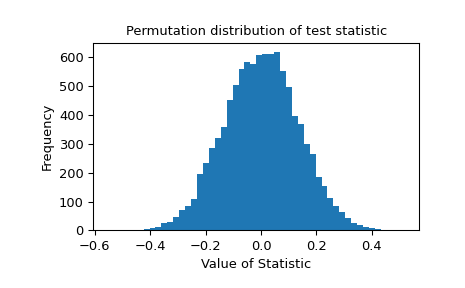

Performs a permutation test of a given statistic on provided data.
For independent sample statistics, the null hypothesis is that the data are
randomly sampled from the same distribution.
For paired sample statistics, two null hypothesis can be tested:
that the data are paired at random or that the data are assigned to samples
at random.
Parameters:
dataiterable of array-like
Contains the samples, each of which is an array of observations.
Dimensions of sample arrays must be compatible for broadcasting except
along axis.
statisticcallable
Statistic for which the p-value of the hypothesis test is to be
calculated. statistic must be a callable that accepts samples
as separate arguments (e.g. statistic(*data)) and returns the
resulting statistic.
If vectorized is set True, statistic must also accept a keyword
argument axis and be vectorized to compute the statistic along the
provided axis of the sample arrays.
The type of permutations to be performed, in accordance with the
null hypothesis. The first two permutation types are for paired sample
statistics, in which all samples contain the same number of
observations and observations with corresponding indices along axis
are considered to be paired; the third is for independent sample
statistics.
'samples' : observations are assigned to different samples
but remain paired with the same observations from other samples.
This permutation type is appropriate for paired sample hypothesis
tests such as the Wilcoxon signed-rank test and the paired t-test.
'pairings' : observations are paired with different observations,
but they remain within the same sample. This permutation type is
appropriate for association/correlation tests with statistics such
as Spearman’s \(\rho\), Kendall’s \(\tau\), and Pearson’s
\(r\).
'independent' (default) : observations are assigned to different
samples. Samples may contain different numbers of observations. This
permutation type is appropriate for independent sample hypothesis
tests such as the Mann-Whitney \(U\) test and the independent
sample t-test.
Please see the Notes section below for more detailed descriptions
of the permutation types.
vectorizedbool, optional
If vectorized is set False, statistic will not be passed
keyword argument axis and is expected to calculate the statistic
only for 1D samples. If True, statistic will be passed keyword
argument axis and is expected to calculate the statistic along axis
when passed an ND sample array. If None (default), vectorized
will be set True if axis is a parameter of statistic. Use
of a vectorized statistic typically reduces computation time.
n_resamplesint or np.inf, default: 9999
Number of random permutations (resamples) used to approximate the null
distribution. If greater than or equal to the number of distinct
permutations, the exact null distribution will be computed.
Note that the number of distinct permutations grows very rapidly with
the sizes of samples, so exact tests are feasible only for very small
data sets.
batchint, optional
The number of permutations to process in each call to statistic.
Memory usage is O( batch * n ), where n is the total size
of all samples, regardless of the value of vectorized. Default is
None, in which case batch is the number of permutations.
The alternative hypothesis for which the p-value is calculated.
For each alternative, the p-value is defined for exact tests as
follows.
'greater' : the percentage of the null distribution that is
greater than or equal to the observed value of the test statistic.
'less' : the percentage of the null distribution that is
less than or equal to the observed value of the test statistic.
'two-sided' (default) : twice the smaller of the p-values above.
Note that p-values for randomized tests are calculated according to the
conservative (over-estimated) approximation suggested in [2] and [3]
rather than the unbiased estimator suggested in [4]. That is, when
calculating the proportion of the randomized null distribution that is
as extreme as the observed value of the test statistic, the values in
the numerator and denominator are both increased by one. An
interpretation of this adjustment is that the observed value of the
test statistic is always included as an element of the randomized
null distribution.
The convention used for two-sided p-values is not universal;
the observed test statistic and null distribution are returned in
case a different definition is preferred.
axisint, default: 0
The axis of the (broadcasted) samples over which to calculate the
statistic. If samples have a different number of dimensions,
singleton dimensions are prepended to samples with fewer dimensions
before axis is considered.
Pseudorandom number generator state used to generate permutations.
If random_state is None (default), the
numpy.random.RandomState singleton is used.
If random_state is an int, a new RandomState instance is used,
seeded with random_state.
If random_state is already a Generator or RandomState
instance then that instance is used.
Returns:
resPermutationTestResult
An object with attributes:
statisticfloat or ndarray
The observed test statistic of the data.
pvaluefloat or ndarray
The p-value for the given alternative.
null_distributionndarray
The values of the test statistic generated under the null
hypothesis.
Notes
The three types of permutation tests supported by this function are
described below.
The null hypothesis associated with this permutation type is that all
observations are sampled from the same underlying distribution and that
they have been assigned to one of the samples at random.
Suppose data contains two samples; e.g. a,b=data.
When 1<n_resamples<binom(n,k), where
k is the number of observations in a,
n is the total number of observations in a and b, and
binom(n,k) is the binomial coefficient (n choose k),
the data are pooled (concatenated), randomly assigned to either the first
or second sample, and the statistic is calculated. This process is
performed repeatedly, permutation times, generating a distribution of the
statistic under the null hypothesis. The statistic of the original
data is compared to this distribution to determine the p-value.
When n_resamples>=binom(n,k), an exact test is performed: the data
are partitioned between the samples in each distinct way exactly once,
and the exact null distribution is formed.
Note that for a given partitioning of the data between the samples,
only one ordering/permutation of the data within each sample is
considered. For statistics that do not depend on the order of the data
within samples, this dramatically reduces computational cost without
affecting the shape of the null distribution (because the frequency/count
of each value is affected by the same factor).
For a=[a1,a2,a3,a4] and b=[b1,b2,b3], an example of this
permutation type is x=[b3,a1,a2,b2] and y=[a4,b1,a3].
Because only one ordering/permutation of the data within each sample
is considered in an exact test, a resampling like x=[b3,a1,b2,a2]
and y=[a4,a3,b1] would not be considered distinct from the
example above.
permutation_type='independent' does not support one-sample statistics,
but it can be applied to statistics with more than two samples. In this
case, if n is an array of the number of observations within each
sample, the number of distinct partitions is:
The null hypothesis associated with this permutation type is that
observations within each sample are drawn from the same underlying
distribution and that pairings with elements of other samples are
assigned at random.
Suppose data contains only one sample; e.g. a,=data, and we
wish to consider all possible pairings of elements of a with elements
of a second sample, b. Let n be the number of observations in
a, which must also equal the number of observations in b.
When 1<n_resamples<factorial(n), the elements of a are
randomly permuted. The user-supplied statistic accepts one data argument,
say a_perm, and calculates the statistic considering a_perm and
b. This process is performed repeatedly, permutation times,
generating a distribution of the statistic under the null hypothesis.
The statistic of the original data is compared to this distribution to
determine the p-value.
When n_resamples>=factorial(n), an exact test is performed:
a is permuted in each distinct way exactly once. Therefore, the
statistic is computed for each unique pairing of samples between a
and b exactly once.
For a=[a1,a2,a3] and b=[b1,b2,b3], an example of this
permutation type is a_perm=[a3,a1,a2] while b is left
in its original order.
permutation_type='pairings' supports data containing any number
of samples, each of which must contain the same number of observations.
All samples provided in data are permuted independently. Therefore,
if m is the number of samples and n is the number of observations
within each sample, then the number of permutations in an exact test is:
factorial(n)**m
Note that if a two-sample statistic, for example, does not inherently
depend on the order in which observations are provided - only on the
pairings of observations - then only one of the two samples should be
provided in data. This dramatically reduces computational cost without
affecting the shape of the null distribution (because the frequency/count
of each value is affected by the same factor).
The null hypothesis associated with this permutation type is that
observations within each pair are drawn from the same underlying
distribution and that the sample to which they are assigned is random.
Suppose data contains two samples; e.g. a,b=data.
Let n be the number of observations in a, which must also equal
the number of observations in b.
When 1<n_resamples<2**n, the elements of a are b are
randomly swapped between samples (maintaining their pairings) and the
statistic is calculated. This process is performed repeatedly,
permutation times, generating a distribution of the statistic under the
null hypothesis. The statistic of the original data is compared to this
distribution to determine the p-value.
When n_resamples>=2**n, an exact test is performed: the observations
are assigned to the two samples in each distinct way (while maintaining
pairings) exactly once.
For a=[a1,a2,a3] and b=[b1,b2,b3], an example of this
permutation type is x=[b1,a2,b3] and y=[a1,b2,a3].
permutation_type='samples' supports data containing any number
of samples, each of which must contain the same number of observations.
If data contains more than one sample, paired observations within
data are exchanged between samples independently. Therefore, if m
is the number of samples and n is the number of observations within
each sample, then the number of permutations in an exact test is:
factorial(m)**n
Several paired-sample statistical tests, such as the Wilcoxon signed rank
test and paired-sample t-test, can be performed considering only the
difference between two paired elements. Accordingly, if data contains
only one sample, then the null distribution is formed by independently
changing the sign of each observation.
Warning
The p-value is calculated by counting the elements of the null
distribution that are as extreme or more extreme than the observed
value of the statistic. Due to the use of finite precision arithmetic,
some statistic functions return numerically distinct values when the
theoretical values would be exactly equal. In some cases, this could
lead to a large error in the calculated p-value. permutation_test
guards against this by considering elements in the null distribution
that are “close” (within a relative tolerance of 100 times the
floating point epsilon of inexact dtypes) to the observed
value of the test statistic as equal to the observed value of the
test statistic. However, the user is advised to inspect the null
distribution to assess whether this method of comparison is
appropriate, and if not, calculate the p-value manually. See example
below.
B. Phipson and G. K. Smyth. “Permutation P-values Should Never Be
Zero: Calculating Exact P-values When Permutations Are Randomly Drawn.”
Statistical Applications in Genetics and Molecular Biology 9.1 (2010).
B. Efron and R. J. Tibshirani. An Introduction to the Bootstrap
(1993).
Examples
Suppose we wish to test whether two samples are drawn from the same
distribution. Assume that the underlying distributions are unknown to us,
and that before observing the data, we hypothesized that the mean of the
first sample would be less than that of the second sample. We decide that
we will use the difference between the sample means as a test statistic,
and we will consider a p-value of 0.05 to be statistically significant.
For efficiency, we write the function defining the test statistic in a
vectorized fashion: the samples x and y can be ND arrays, and the
statistic will be calculated for each axis-slice along axis.
Indeed, the test statistic is negative, suggesting that the true mean of
the distribution underlying x is less than that of the distribution
underlying y. To determine the probability of this occurring by chance
if the two samples were drawn from the same distribution, we perform
a permutation test.
>>> fromscipy.statsimportpermutation_test>>> # because our statistic is vectorized, we pass `vectorized=True`>>> # `n_resamples=np.inf` indicates that an exact test is to be performed>>> res=permutation_test((x,y),statistic,vectorized=True,... n_resamples=np.inf,alternative='less')>>> print(res.statistic)-3.5411688580987266>>> print(res.pvalue)0.004329004329004329
The probability of obtaining a test statistic less than or equal to the
observed value under the null hypothesis is 0.4329%. This is less than our
chosen threshold of 5%, so we consider this to be significant evidence
against the null hypothesis in favor of the alternative.
Because the size of the samples above was small, permutation_test could
perform an exact test. For larger samples, we resort to a randomized
permutation test.
The approximate probability of obtaining a test statistic less than or
equal to the observed value under the null hypothesis is 0.0225%. This is
again less than our chosen threshold of 5%, so again we have significant
evidence to reject the null hypothesis in favor of the alternative.
For large samples and number of permutations, the result is comparable to
that of the corresponding asymptotic test, the independent sample t-test.
The permutation distribution of the test statistic is provided for
further investigation.
>>> importmatplotlib.pyplotasplt>>> plt.hist(res.null_distribution,bins=50)>>> plt.title("Permutation distribution of test statistic")>>> plt.xlabel("Value of Statistic")>>> plt.ylabel("Frequency")>>> plt.show()

Inspection of the null distribution is essential if the statistic suffers
from inaccuracy due to limited machine precision. Consider the following
case:
In this case, some elements of the null distribution differ from the
observed value of the correlation coefficient r due to numerical noise.
We manually inspect the elements of the null distribution that are nearly
the same as the observed value of the test statistic.
If permutation_test were to perform the comparison naively, the
elements of the null distribution with value 0.7999999999999998 would
not be considered as extreme or more extreme as the observed value of the
statistic, so the calculated p-value would be too small.
>>> incorrect_pvalue=np.count_nonzero(null>=r)/len(null)>>> incorrect_pvalue0.14583333333333334 # may vary
Instead, permutation_test treats elements of the null distribution that
are within max(1e-14,abs(r)*1e-14) of the observed value of the
statistic r to be equal to r.
This method of comparison is expected to be accurate in most practical
situations, but the user is advised to assess this by inspecting the
elements of the null distribution that are close to the observed value
of the statistic. Also, consider the use of statistics that can be
calculated using exact arithmetic (e.g. integer statistics).